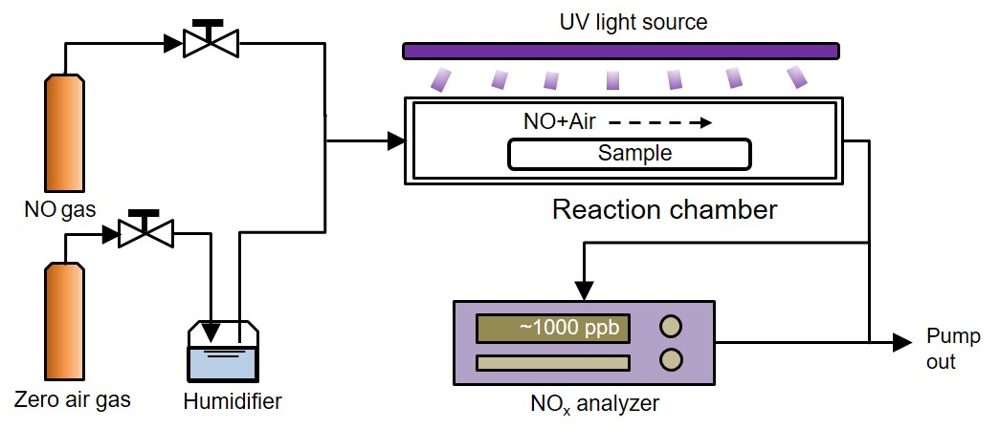

The photocatalytic performance of TiO2-based cementitious materials


Photocatalytic cementitious materials, by incorporating anatase titanium dioxide (TiO2) nanoparticles, can effectively remove smog-producing nitrogen oxide species (NOx) from the atmosphere. In the presence of UV light, TiO2 catalyzes reactions that break down and oxidize NOx to nitrogen (N) species, where it is believed that the photocatalytic products nitrite (NO2-) and nitrate (NO3-) ions remain on and within the near-surface substrate. Considering the difficulty of decreasing NOx levels in large urban areas due to lack of wind or rain, intense road traffic, and proximity to industrial zones, the use of titania-based cementitious materials in concrete infrastructure and building surfaces could be an effective way to achieve cleaner cities.
However, the question remains: where does nitrogen oxides go in concrete? Can they be permanently sequestered?